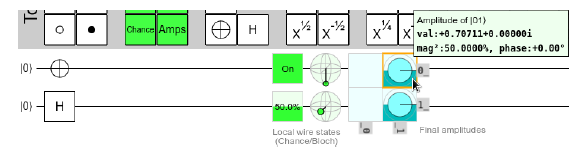

6. Introducción qubits múltiples.#
En este apartado vamos a extender los conocimientos ya vistos anteriormente, pero aumentando el número de qubits con los que se trabaja, dando más realismo a esta ciencia y acercándonos más a la realidad actual, pues con un sólo qubit pocas cosas se pueden conseguir.
Vamos a comenzar a introducir una serie de conceptos previos que nos van a servir para entender mejor el mundo cuántico con más de un qubit.
6.1. Producto tensorial.#
Cuando estamos trabajando con múltiples qubits, definimos el producto tensorial de dos de ellos ( por ejemplo \(|0\rangle\)) mediante el símbolo \(\otimes\):
A menudo y con el fin d agilizar la escritura, lo que se suele hacer es suprimir el símbolo \(\otimes\) y en consecuencia, el producto tensorial anterior, también se suele expresar de la siguiente manera:
Y además de una forma muy frecuente, lo anterior también se donota de la siguiente manera:
Con dos qubits, la base Z es la siguiente: \(\{|00\rangle,|01\rangle,|10\rangle,|11\rangle\}\) y un estado general de superposición se expresa de la siguiente manera:
Si se procede a la medición de estos dos qubits en la base Z vamoa a obtener el estado \(|00\rangle\) con probabilidad \(|c_0|^2\), \(|01\rangle\) con probabilidad \(|c_1|^2\), \(|10\rangle\) con probabilidad \(|c_2|^2\) y \(|11\rangle\) con probabilidad \(|c_3|^2\). De tal manera que la suma de las anteriores probabilidades sea igual a 1:
Si trabajamos con tres qubits, tendríamos ocho elementos que conforman la base Z:
En ocasiones, estos estrings binarios son escritos como números decimales: \(|0\rangle,\, |1\rangle,\, ... |7\rangle\).
Inspirado en lo anterior, se suele denominar al qubit de la derecha qubit cero, al del centro qubit 1 y el de la izquierda segundo qubit. De forma genérica tendrá una representación como:
Entonces la representación decimal de los quibits anteriores, tendrá la siguiente representación decimal:
En otras palabras, etiquetamos los qubits de derecha a izquierda, empezando por cero. Esta convención, donde el qubit más a la derecha es el qubit número cero, se llama little endian.
Quirk y muchos lenguajes de programación cuántica, también utilizan esta codificación little endian.
En contraste, la convención opuesta, en la que el bit más a la izquierda es el qubit cero y el más a la derecha el qububit segundo, se denomina big endian. En este trabajo, nosotros vamos a considerar la notación little endian.
Con la notación ya desarrollada anteriormente, el estado general de tres qubits puede ser expresado como
Y la probabilidad de obtener \(|j\rangle\) cuando se mide en la base Z es \(|c_{j}|^2\), de tal manera que \(\sum |c_{j}|^2 = 1\).
Con n qubits, tendríamos \(N=2^n\) estados que conforman la base Z, y entonces generalizando lo anterior, tendríamos:
Un estado se representará como:
Igualmente y con el fín de agilizar la nomenclatura, también usamos potencias de la siguiente manera:
Ya sabemos que con un qubit simple, podemos parametrizar el estado con la expresión:
Con dos qubits, sin embargo tendríamos cuatro amplitudes o números complejos \(c_0,c_1,c_2,c_3\), y en consecuencia, no podremos hacer una representación en la esfera de Bloch como ocurría en el caso de un solo qubit.
El producto tensorial también se puede escribir con la notación bra:
También aquí tendremos un producto interno, por ejemplo podremos hacer el producto interno de \(\langle01|\) y \(|00\rangle\), y tendremos lo siguiente:
En consecuencia \(\langle01|\) y \(|00\rangle\) son ortogonales.
6.2. Producto de Kronecker#
En álgebra lineal, el producto tensorial no es más que el denominado producto de Kronecker entre dos matrices, el cual se obtiene multiplicando cada elemento de la primera matriz por la matriz del segundo términos. Veamos cómo se haría con dos qubits.
y por lo tanto
De forma similar con tres qubits, su estado puede ser escrito como un vector columna de ocho elementos:
Y en general con n qubits el vector de estado tendrá \(N=2^n\) elementos
Con la notación bras el producto Kronecker sigue siendo el producto tensorial. POr ejemplo:
Y de forma general:
En Sympy tenemos la clase TensorProduct que nos permite realizar este tipo de productos. Veamos a continuación algunos ejemplos.
from sympy import Matrix
from sympy.physics.quantum import TensorProduct
m1 = Matrix([[1,0]])
TensorProduct(m1, m1)
m2= Matrix([[0,1]])
TensorProduct(m1,m2)
Numpy también nos ofrece la clase numpy.kron que nos permite realizar este tipo de productos de matrices.
6.3. Medición de qubits individuales.#
Supongamos que tenemos dos qubits en el siguiente estado:
Si hacemos la medición sobre los dos qubits, obtenemos \(|00\rangle\) con probabilidad 1/2, \(|01\rangle\) con probabilidad 1/4, \(|10\rangle\) con probabilidad 3/16 o \(|11\rangle\) con probabilidad 1/16.
Ahora, en lugar de querer medir sobre ambos qubits, supongamos que queremos medir sobre el qubit que figura a la la izquierda, que como puede verse puede tomar los valores \(|0\rangle\) o \(|1\rangle\), y entoncs colapsará hacia uno de esos valores con alguna probabilidad.
La probabilidad de que colapse hacia \(|0\rangle\) será igual a la suma de las amplitudes al cuadrado de \(|00\rangle\) y \(|01\rangle\) puesto que estos estados tienen en su parte izquierda el qubit \(|0\rangle\), por lo tanto en nuestro caso ese valor será el siguiente:
Razonando de forma similar, para el valor de \(|1\rangle\) debemos de tomar los estados \(|10\rangle\) y \(|11\rangle\), y se obtiene:
En consecuencia, si miramos el colapso hacia \(|0\rangle\), entonces el valor buscado está dado por la expresión:
y para el estado \(|1\rangle\):
Siendo A y B las constantes de normalización, que en este caso valdrán \(A=2/\sqrt{3}\) y B=2
Por lo tanto, el colapso es :
\(|0\rangle\) con probabilidad 3/4 y colapsa hacia \(\sqrt{\frac{2}{3}}|00\rangle+\frac{1}{\sqrt{3}}|01\rangle\)
\(|1\rangle\) con probabilidad 1/4 y colapsa hacia \(\frac{\sqrt{3}}{2}|10\rangle+\frac{1}{2}|11\rangle\)
6.4. Medidas secuenciales sobre qubits unitarios.#
Como continuación de la sección anterior, en la presente vamos a ver lo que ocurre cuando medimos un qubit detrás de otro. Como ya hemos visto, si medimos el primer qubit a la izquierda se obtiene:
\(|0\rangle\) con probabilidad 3/4 y colapsa hacia \(\sqrt{\frac{2}{3}}|00\rangle+\frac{1}{\sqrt{3}}|01\rangle\)
\(|1\rangle\) con probabilidad 1/4 y colapsa hacia \(\frac{\sqrt{3}}{2}|10\rangle+\frac{1}{2}|11\rangle\)
Y ahora si medimos el qubit de la derecha a continuación, los posibles valores de esta secuencia son: \(|00\rangle\), \(|01\rangle\), \(|10\rangle\) y \(|11\rangle\). Entonces la probabilidad de obtener \(|00\rangle\) es igual a la probabilidad de obtener en primer lugar \(|0\rangle\) para el qubit de la izquierda con probabilidad 3/4 y después se multiplica por 2/3 que es la probabilidad de obtener el segundo qubit de la derecha, por lo tanto la probabilidad total sería: \(3/4 \cdot 2/3 = 1/2\). Para cada uno de los cuatro estados anteriores la probabilidad sería:
\(P(|00\rangle)\) = Prob(primer \(|0\rangle)\) izquierda * Prob(\(|0\rangle)\) derecha) = \(\frac{3}{4} \frac{2}{3}=\frac{1}{2}\)
\(P(|01\rangle)\) = Prob(primer \(|0\rangle)\) izquierda * Prob(\(|1\rangle)\) derecha) = \(\frac{3}{4} \frac{1}{3}=\frac{1}{4}\)
\(P(|10\rangle)\) = Prob(primer \(|1\rangle)\) izquierda * Prob(\(|0\rangle)\) derecha) = \(\frac{1}{4} \frac{3}{4}=\frac{3}{16}\)
\(P(|11\rangle)\) = Prob(primer \(|1\rangle)\) izquierda * Prob(\(|1\rangle)\) derecha) = \(\frac{1}{4} \frac{1}{4}=\frac{1}{16}\)
Observe que estos resultados y probabilidades son exactamente los mismos que si hubiéramos medido ambos qubits al mismo tiempo, como debería ser. Medir ambos qubits es lo mismo que medir uno tras otro, asumiendo que el estado no se modificó entre las dos mediciones.
6.5. Entanglement (estados entrelazados).#
Algunos estados cuánticos pueden ser factorizados o descompuestos en el producto tensorial de otros dos. Por ejemplo
Este tipo de factorización se denomina product states o simplemente estados separables. Cada qubit simple obtenido puede ser visualizado sobre la esfera de Bloch. En este caso concreto la visualización sería la siguiente:
Vamos a ver a continuación con un ejemplo concreto cómo podremos hacer esto, cuando el estado sea factorizable:
Y deseamos ponerlo como un producto de dos estados:
donde:
Hacemos el producto y se tiene:
Enlazando los coeficientes con el estado inicial se tiene:
Resolviendo lo anterior se llega a que:
Y si normalizamos ambos qubits, se obtiene:
En general, un producto de estados de qubits puede ser escrito como
Ahora bien, no siempre se puede conseguir esta descomposición, en este caso se dice que los estados están entrelazados o enredados ( entangled states)
Un ejemplo es el siguiente:
El estado anterior no se puede descomponer en el producto de dos estados de la forma \(|\psi_{1}\rangle|\psi_{0}\rangle\). Para demostrarlo, lo vamos a hacer por reducción al absurdo. Supongamos se pueden poner como el producto de dos estados:
Entonces igualando los coeficientes, se tendría:
Solución que claramente es incompatible, debido a que las descomposición inicial es imposible.
Otros estados entrelazados muy utilizados en la programación cuántica son los siguientes:
6.6. Puertas cuánticas.#
Supomgamos que tenemos un estado formado por dos qubits y que queremos aplicar al primer estado qubit de la izquierda una puerta de Hadamard H y al de la derecha una puerta I. Entonces podemos escribir lo siguiente:
También podemos escribir el resultado como un vector columna de la siguiente manera:
Para dibujar un circuito cuántico, vamos a utilizar el convenio de que el el qubit más a la derecha es el que se coloca en la parte superior del diagrama y el más a la izquierda en la parte inferior. Es decir en el caso contemplado más arriba, la representación sería de las siguiente manera:
Veamos cómo actúa este producto tensorial en cada elemento de la base Z. Ya lo hemos visto para \(|00>\), veamos para el resto de los elementos:
Teniendo estos resultados en cuenta, podremos escribir ese producto tensorial de dos matrices, mediante otra matriz, donde cada columna es el vector obtenido en las operaciones anteriores, es decir:
Otra manera de obtener esta matriz es mediante el producto de Kronecker entre H e I:
También podemos obtener el resultado anterior utilizando sympy. Recordemos que en una sección anterior, habíamos definido un módulo de python en el que se definían las matrices más usuales dentro de la programación cuántica. Vamos a utilizar ese módulo para obtener de forma rápida este producto tensorial de dos matrices. Lo hacemos con el siguiente código:
import puertasLogicas as p
TensorProduct(p.H, p.I1)
Otro ejemplo similar, lo podemos ver con las matrices H y X, y en este caso tendremos:
El dibujo del circuito cuántico sería el siguiente:
En Quirk obtendríamos lo siguiente
Puesto que el qubit superior es \(|1\rangle\), Quirk muestra correctamente que la probabilidad de obtener 1 al medir es 100% (On) y por lo tanto estará sobre el polo sur de la esfera de Bloch. Similarmente, el qubit de la derecha es \(|+\rangle\) y Quirk muestra correctamente que la probabilizar de colapsar al plo sur es del 50%.
Quirk también facilita información sobre un plano denominado real-imaginario y que está etiquetado como “Fianl amplitudes”. En este apartado hay cuatro cajetines o “boxes” que muestran la información correspondiente cuando sobre ellos se pasa el cursor. El de la parte superior izquierda hace referencia a la amplitud \(|00\rangle\) que en este ejemplo es cero. El de la parte superior derecha hace referencia a \(|01\rangle\) cuya amplitud en este caso es \(1/\sqrt{2}\) . También se puede ver la probabilidad que es \(\left|1/\sqrt{2}\right|^{2}=1/2\)

La amplitud se puede ver que en este caso es \(0.70711 = 1/\sqrt{2}\). Similares interpretaciones se pueden aplicar para los dos cajetines situados en la parte inferior de esta zona.
Utilizamos la siguiente notación para referirnos a un producto reiterado de una determinada puerta lógica. POr ejemplo \(H\otimes H\otimes\cdots\otimes H\), lo escribiremos de la siguiente manera:
6.7. Puertas cuánticas de dos qubits.#
Igualmente existen puertas que de una manera simultánea actúan sobre dos qubits. Veamos las más populares:
6.7.1. La puerta CNOT.#
La puerta CNOT o puerta controlled-NOT invierte el qubit de la derecha si el de la izquierda es el qubit 1:
Al qubit de la izquierda se le denomina qubit de control y al de la derecha qubit target. Así pues con esta puerta el qubit de control queda sin modificar y el qubit target se le aplica una transformación del tipo puerta XOR:
POr lo tanto una puerta CNOT va a ser un puerta de tipo cúbit XOR
Cuando actúa sobre un estado en superposición, ocurre lo siguiente:
Por lo tanto se intercambian las amplitudes de \(|10\rangle\) y \(|11\rangle\)
Se puede obtener la matriz de una puerta CNOT sin más que ver cómo transforma los elementos de la base Z, al final la matriz que le corresponde es la siguiente:
De acuerdo con esto, si actúa sobre on determinado estado en superposición se obtiene lo siguiente:
Un circuito cuántico CNOT se representa de la siguiente manera:
El punto sólido indica el qubit de control y el símbolo \(\oplus\) indica la parte del target.
Para generar una puerta de este tipo en Quirk, debemos colocar el punto oscuro y la puerta X de la forma que se ve en la siguiente figura:
Notar que también hemos hecho click en el qubit de más abajo para cambiar el estado de 0 a 1.
Con el fin de detallar con mayor claridad cual es el qubit de control y de target, utilizaremos la siguiente notación:
\(CNOT_{ij}=\) CNOT con qubit i como control y j como target. POr ejemplo si si el control es 0 y el target 1, tendríamos la siguiente puerta:
En Quirk tendríamos la siguiente situación
Para intercambiar los qubits de control y target, podemos montar el siguiente esquema
Es decir:
La matriz de una puerta \(CNOT_{01}\) es la siguiente:
Vamos a demostrar la afirmación anterior, multiplicando las matrices correspondientes. Pero antes debemos decir que hemos ampliado las definiciones de matrices para incorporar las dos matrices de CNOT en el paquete puertaslogicas, a cuyo fichero se le ha añadido el siguiente código:
CNOT10=Matrix([ [1,0,0,0], [0,1,0,0], [0,0,0,1], [0,0,1,0] ])
CNOT01=Matrix([ [1,0,0,0], [0,0,0,1], [0,0,1,0], [0,1,0,0] ])
Haciendo las pertinentes operaciones algebráicas, vemos que el resultado es el esperado
import puertasLogicas as pt
TensorProduct(pt.H, pt.H)*pt.CNOT10*TensorProduct(pt.H, pt.H)-pt.CNOT01

Lo anterior se puede contrastar también utilizando Quirt. Efectivamente en los dós gráficos que siguen, se ha colocado en la figura de la izquierda se puede ver el resultado de la parte izquierda de la igualdad anterior, y en la zona de la derecha la parte derecha de la igualdad y se puede comprobar perfectamente que el resultado es idéntico.
Esta puerta CNOT es muy importante pues es capaz de generar estados entrelazados, muy interesantes dentro de la programación cuántica:
Veamos a continuación alguna igualdades que se dan entre circuitos cuánticos.
\(\mathrm{CNOT}(X\otimes I)=(X\otimes X)C N O T.\)

Comprobamos a continuación esa igualdad:
import puertasLogicas as pt
A=pt.CNOT10*TensorProduct(pt.X,pt.I1)
B=TensorProduct(pt.X,pt.X)*pt.CNOT10
A-B
\(\mathrm{CNOT}(I\otimes X)=(I\otimes X)\mathrm{CNOT}.\)
A=pt.CNOT10*TensorProduct(pt.I1,pt.X)
B=TensorProduct(pt.I1,pt.X)*pt.CNOT10
A-B
\(\mathrm{CNOT}(Z\otimes I)=(Z\otimes I)\mathrm{CNOT}.\)
A=pt.CNOT10*TensorProduct(pt.Z,pt.I1)
B=TensorProduct(pt.Z,pt.I1)*pt.CNOT10
A-B
\({\mathrm{CNOT}}(I\otimes Z)=(Z\otimes Z){\mathrm{CNOT}}.\)
A=pt.CNOT10*TensorProduct(pt.I1,pt.Z)
B=TensorProduct(pt.Z,pt.Z)*pt.CNOT10
A-B
6.7.2. Puertas controladas U#
De forma similar a como trabaja la puerta CNOT, se pueden construir las puertas controladas U y en este sentido este tipo de puertas actúa de la siguiente manera:
Para obtener la representación de cU, primero suponemos que U actúa sobre un qubit simple:
y de esta manera U tiene una forma matricial 2x2:
Entonces:
Y por lo tanto la matriz será
Como puede verse lo anterior es una generalización de la puerta CNOT vista anteriormente:
Algunos de estos ejemplos puede ser la puerta controlada-Z y la puerta controlada-phase
6.7.3. La puerta SWAP#
Esta puerta lo que hace es intercambiar dos qubits:
En otras palabras:
Esta puerta no puede generar estados entrelazados porque simplemente lo que hace es intercambiar los factores. Veamos cómo actúa sobre una superposición de estados:
y en consecuencia la matriz correspondiente sería la siguiente:
Por lo tanto su actuación sobre un estado general de superposición sería el siguiente:
Desde un punto de vista gráfico, este tipo de puertas las podemos representar de la siguiente manera:
En Quirt podemos implementar esta puerta con el botón marcado con Swap:

Una puerta SWAP se puede obtener mediante la siguiente composición:
Efectivamente, veamos a continuación que se da esa equivalencia
import puertasLogicas as pt
A=pt.CNOT10*pt.CNOT01*pt.CNOT10
B=pt.SWAP
A-B
6.7.4. Puerta de Toffoli#
Esta es una puerta que afecta a tres qubits, y es de la forma: controlada-controlada NOT. Esta puerta cambia eu qubit de la derecha si el de la izquierda y el del centro están a 1.
O también de forma equivalente
La matriz correspondiente a una puerta de Toffoli es la siguiente:
La representación gráfica de esta puerta es la siguiente:
En Quirt se construye de la siguiente manera